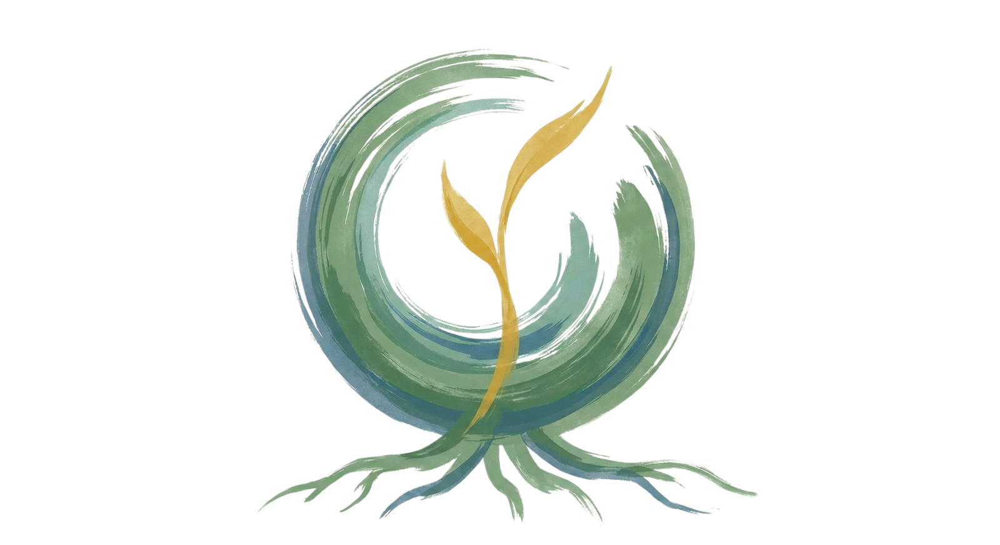

The Art of Communication
The Art of Communication
How You Meet People, Work With Conflict, and Stay Present With the Rawness of Life
How you meet people, work with conflict, and stay present when you're met with the rawness and realness of life — your own and others'.
Apply HereFree Intro Session
Monday, October 26, 2026 · 9:30–10:45 AM ET / 2:30–3:45 PM CET / 3:30–4:45 PM Israel
Join us for a free 75-min intro workshop with Danny
Torah Is About Relationship
Bein adam la-chavero runs through your everyday interactions, shapes the contours of your collaboration with colleagues, board members, funders, the family at the graveside, the member who corners you at kiddush. Most of us were never taught the craft of those moments beyond important but generic guiding values.
Three places the gap shows up:


None of that means something's wrong with you. Navigating these contexts calls for skills, and most rabbis never got the same level of thorough, nuanced training that they did for learning and teaching text, theology, or leading prayer. That's what these eleven weeks are for.
Eleven weeks of relational practice for rabbis and Jewish spiritual leaders.
Who Is This For?
Rabbis and Jewish spiritual leaders in every kind of setting, and we mean that literally. Pulpit rabbis. Educators and heads of school. Hillel and campus professionals. Chaplains — hospital, hospice, military, prison. Rabbis running organizations, movements, foundations. Rabbis doing community organizing. Independent and entrepreneurial rabbis with no institution behind them. Rabbis between roles. Rabbis whose work is almost all one-to-one, and rabbis who rarely stand before a congregation.
Much rabbinic programming assumes a shul and a bimah. If your rabbinate doesn't look like that, you belong here just as much. Being present with people, working with conflict, carrying others' pain without losing yourself, finding the path that makes ואהבת לרעך כמוך an everyday possibility rather than an unfulfilled aspiration — that's the job in every setting rabbis actually work in.


The Torah Underneath It
Torah treats the space between people as an avodah — a place of practice, healing, and revelation. The Shechina rests between two who sit together with words of Torah between them (Pirkei Avot 3:2). "Love your fellow as yourself," said R' Akiva, is the klal gadol of the whole Torah.
The material puts that beside contemporary teachers of relational practice: Marshall Rosenberg's Nonviolent Communication, Thomas Hübl on attunement, Robert Gonzales on needs as "the doorway to spirit."
How much explicit text study sits in each session will grow over the course. The Jewish grounding is there from session one.

Sixteen years ago, I was stuck in rumination loops and relational drama. I couldn't access the grounded, compassionate version of myself when and where I most wanted to.
Drawing on intensive training in Nonviolent Communication, over a decade of deep training across multiple trauma-healing and therapeutic modalities, more than a year of silent meditation retreats, and years of real-world practice and facilitating trainings around the world, I've woven core principles of transformation into the powerful vehicle of embodied practice in community — not just being in community, but exploring and experiencing new ways of being alive together.
Over the past ten-plus years I've guided thousands of people — parents, professionals, activists, and seekers — through this same transformation. This course is a rigorous and supportive framework tailored to the unique nervous-system demands of rabbinical life.
Now I want to guide you through the same journey.
What We'll Work On
Ten sessions build in three movements, plus one guest session on inner work.

Your Own System
What happens in your body and your attention under relational pressure, and how to regulate enough to stay present. The difference between speaking to manage an impression and speaking from consciousness — becoming a ruach memalela, a speaking spirit.

Meeting the Other
Whole-body listening — "feeling felt." Hearing the need under a complaint or an attack, working with judgments as information rather than verdicts. This is also where we sit with grief and deepen the capacity for empathy.
Honest Speech
Saying the true thing without it coming across as blame. Setting a boundary and keeping the relationship. Staying in dialogue across real distance, including where you and the other person disagree.
We'll Learn Together
Build the foundation you can learn to rest in. Master Polyvagal Theory to understand how your nervous system affects communication, learn to navigate toward the "green zone" where people are naturally cooperative, and discover the key skill that transforms dialogue from competition into collaboration.
Replace the "jackal consciousness" (right/wrong, power-over thinking) with needs-based relating. Like Neo seeing the Matrix code, you'll learn to see the life-needs that animate every interaction, opening pathways to coherence and mutually satisfying outcomes.
Discover why we have feelings and what to do with those "difficult" emotions that complicate relationships. Learn to access the embodied intelligence that feelings express and welcome them as gateways to connection and more congruent life choices.
Master the "superpower" of attuned empathy. Learn the foundational dance steps that turn relating into an art — many find this to be the master key that unlocks relationships. Move beyond techniques to create genuine connection that doesn't depend on agreement.
Stop having endless arguments about who's right. Learn to create shared reality and talk through problems without triggering defensiveness. Discover the potent alternative to praise and compliments that fuels intrinsic motivation and richer connection.
Transform how you make requests. Instead of people feeling burdened or giving in from obligation, learn the art of requests that invite true giving, create more choice and agency, and generate aliveness in relationships.
Access your magnetic power through presence. Learn to connect coherently with yourself, move beyond people-pleasing and "shoulds," and access more inner freedom, choice, and self-compassion.
Speak truth with care. Learn to be skillfully real without "rocking the boat" or reinforcing that honesty comes at a cost. Leverage the power of human resonance to be both authentic AND relational.
Learn to meet grief not as a problem to be solved, but as a sacred process to be honored. In a culture that often demands we "fix" or move past pain, discover how to slow down and offer a high-quality, non-judgmental presence. Master the somatic skills to stay anchored and regulated while navigating deep sorrow.
Put all the dance steps together. Navigate the back-and-forth of real conversations with skill, even in charged contexts. Master the art of collaborative dialogue in your most important relationships.
A Practice-Rich Sanctuary

Live Weekly Sessions (2 hours)
- Live Danny-led practice sessions with our team
- Structured practice in breakout rooms with our coaches on hand for support
- Fertile and inspiring space to tend the seeds of transformation

Cohort-Based Community
- Safe practice space — explore new ways of relating with a dedicated peer group of like-minded Jewish leaders
- Consistent community — go through all 11 weeks with the same people

Weekly Learning Modules
- Units released weekly, watch on your own schedule
- Structured exercises to integrate skills into daily life, with AI to enhance your practice

Experienced Coaches Supporting You
- Coaches work alongside Danny through demos, practice, and Q&A in every session
- Ongoing guidance throughout the week on our course platform
2× 1-on-1 Coaching Sessions
- Two sessions during the cohort, at least one with Danny (possibly one with a member of the coaching team)

Mobile App Access
- Keep the content front of mind in everyday interactions
- High-yield audio/video modules on desktop and mobile, fit training into your actual schedule
Speak with Danny Cohen before you enroll
Effective communication is at the heart of rabbinic work, and every rabbi's context is different. Take 15 minutes to speak directly with Danny Cohen, who leads this course. We'll talk through what you're navigating right now and explore how the cohort can help.
Email MeThis isn't just about being "better at talking." It's about embodying the values of an interdependent future in the micro-moments where culture actually changes. When you're anchored in presence and confident in communication, you naturally shift the environment from defensive friction to collaborative trust.
Voices from Our Community
This Course Is Right for You If:
8:30–10:30 AM ET / 2:30–4:30 PM CET / 3:30–5:30 PM Israel
FLEXIBLE CONTRIBUTION OPTIONS
These skills matter in every kind of rabbinate — pulpit and non-pulpit, large institution and none at all, well-resourced and stretched thin. The sliding scale is built so a chaplain, a solo community rabbi, and a rabbi with a full professional-development budget can all take part.
Many rabbinic positions carry a professional-development or continuing-education budget that covers a cohort like this — it's worth asking.
Scholarship: if the tiers above don't reflect your reality, a limited number of scholarship rates are available by application — reach out to mike@artofcommunication.life.
How to Register
Our Confidence Guarantee — We've seen repeatedly how this course is transformational. If after attending your first live session you don't feel this is the right fit, we'll refund your full investment within the first 7 days.
Fill Out an Application
In order to check that this course is the right fit for you and for us, and to get to know you a little before we begin, we ask everyone to fill out an application. Once we've reviewed your application we will be in touch via email.
Complete Payment
Once approved we will send you an email with payment details where you can choose the amount that best works for you.
Join Our Course Platform
Once payment is complete you'll be directed to our course platform (hosted by Mighty Networks) to access materials and connect with your cohort.
Want 1-on-1 Guidance Through Your Journey?
1-1 AccompanimentHere's what past participants experience:
"There's this precise, caring way of connecting where parts of myself get invited into connection rather than left out. I can be whole in connection and find my way to presence, where even tender parts are welcome."
"There is one modality I recommend to everyone without reservation, and that is NVC. Danny brings not only his deep knowledge but also his compassion and presence."
"Danny's course was consistently a highlight of my week. My partner and I were on the brink of separating due to communication struggles. This course gave us powerful practices for our most difficult conversations. Working with Danny was truly transformational."